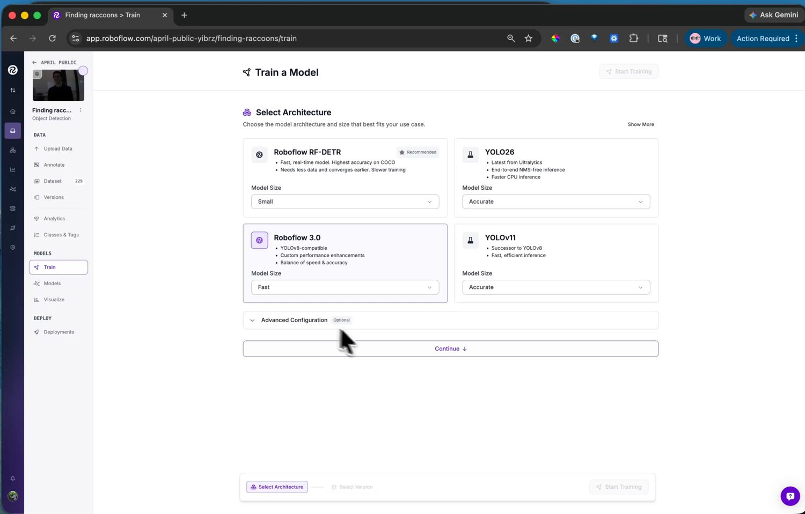

15.7.4. Training the model¶
With a labelled dataset in hand, training is a guided flow on the Train page: lock in a dataset version, pick an architecture, and hand the run off to Roboflow’s servers.
15.7.4.1. The dataset version¶
Before training, Roboflow builds a dataset version – a frozen snapshot of the images plus two transforms applied on the way in:
Preprocessing resizes every image to the resolution the model trains at. Keep that resolution small: the camera runs small models, and a detector trained at a modest resolution fits the camera’s memory and runs fast.
Augmentation synthesizes extra training images by perturbing the originals – flips, brightness and exposure shifts, blur, noise. Each augmentation teaches the model to tolerate a real variation it will meet on the camera, which stretches a small hand-captured dataset much further.

An augmentation preview: each option shows what it does to a sample image before you commit it to the version.¶
Match the augmentations to variations the camera will actually see. Brightness and exposure earn their place – lighting changes constantly. Skip ones that never happen in your setup; a camera bolted in place never sees a vertical flip, so flip augmentation only dilutes the dataset.
15.7.4.2. Choosing an architecture¶
Next, pick the model architecture. Roboflow offers several, each with a size selector trading accuracy against speed.
{kind=link}

The architecture choices – each with a size selector trading accuracy against inference speed.¶
For the camera, pick Roboflow 3.0. It is YOLOv8 under the hood,
and the camera ships a YOLOv8 post-processor in
ml.postprocessing.ultralytics, so its output decodes with no
extra code on your side. Choose the Fast size – it fits the
camera’s memory and runs at a usable frame rate.
15.7.4.3. Running the training¶
Start the run and training happens on Roboflow’s servers – usually well under an hour for a small dataset, with an email when it is done. The version page then shows the training graphs and the accuracy metrics: mAP, precision, and recall.

The trained model with its accuracy metrics. From here, the Visualize page also runs it on test images or a webcam for a quick sanity check.¶
If the numbers are good, the model is ready to deploy. If not, the fix is usually more or more varied data – capture another clip, label it, and train a new version.